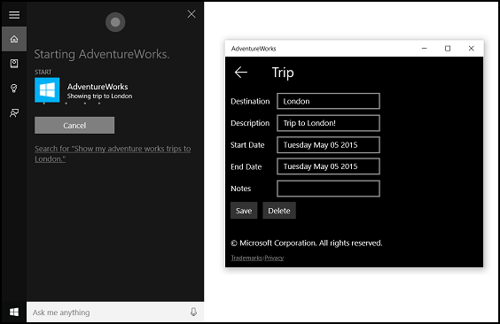

Activate a foreground app with voice commands through Cortana
Warning
This feature is no longer supported as of the Windows 10 May 2020 Update (version 2004, codename "20H1").
In addition to using voice commands within Cortana to access system features, you can also extend Cortana with features and functionality from your app. Using voice commands, your app can be activated to the foreground and an action or command executed within the app.
When an app handles a voice command in the foreground, it takes focus and Cortana is dismissed. If you prefer, you can activate your app and execute a command as a background task. In this case, Cortana retains focus and your app returns all feedback and results through the Cortana canvas and the Cortana voice.
Voice commands that require additional context or user input (such as sending a message to a specific contact) are best handled in a foreground app, while basic commands (such as listing upcoming trips) can be handled in Cortana through a background app.
If you want to activate an app in the background using voice commands, see Activate a background app in Cortana using voice commands.
Note
A voice command is a single utterance with a specific intent, defined in a Voice Command Definition (VCD) file, directed at an installed app via Cortana.
A VCD file defines one or more voice commands, each with a unique intent.
Voice command definitions can vary in complexity. They can support anything from a single, constrained utterance to a collection of more flexible, natural language utterances, all denoting the same intent.
To demonstrate foreground app features, we'll use a trip planning and management app named Adventure Works from the Cortana voice command sample.
To create a new Adventure Works trip without Cortana, a user would launch the app and navigate to the New trip page. To view an existing trip, a user would launch the app, navigate to the Upcoming trips page, and select the trip.
Using voice commands through Cortana, the user can instead just say, "Adventure Works add a trip" or "Add a trip on Adventure Works" to launch the app and navigate to the New trip page. In turn, saying "Adventure Works, show my trip to London" will launch the app and navigate to the Trip detail page, shown here.

These are the basic steps to add voice-command functionality and integrate Cortana with your app using speech or keyboard input:
- Create a VCD file. This is an XML document that defines all the spoken commands that the user can say to initiate actions or invoke commands when activating your app. See VCD elements and attributes v1.2.
- Register the command sets in the VCD file when the app is launched.
- Handle the activation-by-voice-command, navigation within the app, and execution of the command.
Tip
Prerequisites
If you're new to developing Universal Windows Platform (UWP) apps, have a look through these topics to get familiar with the technologies discussed here.
- Create your first app
- Learn about events with Events and routed events overview
User experience guidelines
See Cortana design guidelines for info about how to integrate your app with Cortana and Speech interactions for helpful tips on designing a useful and engaging speech-enabled app.
Create a new solution with project in Visual Studio
Launch Microsoft Visual Studio 2015.
The Visual Studio 2015 Start page appears.
On the File menu, select New > Project.
The New Project dialog appears. The left pane of the dialog lets you select the type of templates to display.
In the left pane, expand Installed > Templates > Visual C# > Windows, then pick the Universal template group. The dialog's center pane displays a list of project templates for Universal Windows Platform (UWP) apps.
In the center pane, select the Blank App (Universal Windows) template.
The Blank App template creates a minimal UWP app that compiles and runs, but contains no user-interface controls or data. You add controls to the app over the course of this tutorial.
In the Name text box, type your project name. For this example, we use "AdventureWorks".
Click OK to create the project.
Microsoft Visual Studio creates your project and displays it in the Solution Explorer.
Add image assets to project and specify them in the app manifest
UWP apps can automatically select the most appropriate images based on specific settings and device capabilities (high contrast, effective pixels, locale, and so on). All you need to do is provide the images and ensure you use the appropriate naming convention and folder organization within the app project for the different resource versions. If you don't provide the recommended resource versions, accessibility, localization, and image quality can suffer, depending on the user's preferences, abilities, device type, and location.
For more detail on image resources for high contrast and scale factors, see Guidelines for tile and icon assets.
You name resources using qualifiers. Resource qualifiers are folder and filename modifiers that identify the context in which a particular version of a resource should be used.
The standard naming convention is foldername/qualifiername-value[_qualifiername-value]/filename.qualifiername-value[_qualifiername-value].ext. For example, images/logo.scale-100_contrast-white.png, which can be referred to in code using just the root folder and the filename: images/logo.png. See How to name resources using qualifiers.
We recommend that you mark the default language on string resource files (such as en-US\resources.resw) and the default scale factor on images (such as logo.scale-100.png), even if you do not currently plan to provide localized or multiple resolution resources. However, at a minimum, we recommend that you provide assets for 100, 200, and 400 scale factors.
Important
The app icon used in the title area of the Cortana canvas is the Square44x44Logo icon specified in the "Package.appxmanifest" file.
Create a VCD file
- In Visual Studio, right-click your primary project name, select Add > New Item. Add an XML File.
- Type a name for the VCD file (for this example, "AdventureWorksCommands.xml"), and click Add.
- In Solution Explorer, select the VCD file.
- In the Properties window, set Build action to Content, and then set Copy to output directory to Copy if newer.
Edit the VCD file
Add a VoiceCommands element with an xmlns attribute pointing to https://schemas.microsoft.com/voicecommands/1.2.
For each language supported by your app, create a CommandSet element that contains the voice commands supported by your app.
You can declare multiple CommandSet elements, each with a different xml:lang attribute so your app to be used in different markets. For example, an app for the United States might have a CommandSet for English and a CommandSet for Spanish.
Caution
To activate an app and initiate an action using a voice command, the app must register a VCD file that contains a CommandSet with a language that matches the speech language selected by the user for their device. The speech language is located in Settings > System > Speech > Speech Language.
Add a Command element for each command you want to support. Each Command declared in a VCD file must include the following information:
- An AppName attribute that your application uses to identify the voice command at runtime.
- An Example element that contains a phrase describing how a user can invoke the command. Cortana shows this example when the user says "What can I say?", "Help", or they tap See more.
- A ListenFor element that contains the words or phrases that your app recognizes as a command. Each ListenFor element can contain references to one or more PhraseList elements that contain specific words relevant to the command.
Note
ListenFor elements cannot be programmatically modified. However, PhraseList elements associated with ListenFor elements can be programmatically modified. Applications should modify the content of the PhraseList at runtime based on the data set generated as the user uses the app. See Dynamically modify Cortana VCD phrase lists.
A Feedback element that contains the text for Cortana to display and speak as the application is launched.
A Navigate element indicates that the voice command activates the app to the foreground. In this example, the showTripToDestination command is a foreground task.
A VoiceCommandService element indicates that the voice command activates the app in the background. The value of the Target attribute of this element should match the value of the Name attribute of the uap:AppService element in the package.appxmanifest file. In this example, the whenIsTripToDestination and cancelTripToDestination commands are background tasks that specify the name of the app service as "AdventureWorksVoiceCommandService".
For more detail, see the VCD elements and attributes v1.2 reference.
Here's a portion of the VCD file that defines the en-us voice commands for the Adventure Works app.
<?xml version="1.0" encoding="utf-8" ?>
<VoiceCommands xmlns="https://schemas.microsoft.com/voicecommands/1.2">
<CommandSet xml:lang="en-us" Name="AdventureWorksCommandSet_en-us">
<AppName> Adventure Works </AppName>
<Example> Show trip to London </Example>
<Command Name="showTripToDestination">
<Example> Show trip to London </Example>
<ListenFor RequireAppName="BeforeOrAfterPhrase"> show [my] trip to {destination} </ListenFor>
<ListenFor RequireAppName="ExplicitlySpecified"> show [my] {builtin:AppName} trip to {destination} </ListenFor>
<Feedback> Showing trip to {destination} </Feedback>
<Navigate />
</Command>
<Command Name="whenIsTripToDestination">
<Example> When is my trip to Las Vegas?</Example>
<ListenFor RequireAppName="BeforeOrAfterPhrase"> when is [my] trip to {destination}</ListenFor>
<ListenFor RequireAppName="ExplicitlySpecified"> when is [my] {builtin:AppName} trip to {destination} </ListenFor>
<Feedback> Looking for trip to {destination}</Feedback>
<VoiceCommandService Target="AdventureWorksVoiceCommandService"/>
</Command>
<Command Name="cancelTripToDestination">
<Example> Cancel my trip to Las Vegas </Example>
<ListenFor RequireAppName="BeforeOrAfterPhrase"> cancel [my] trip to {destination}</ListenFor>
<ListenFor RequireAppName="ExplicitlySpecified"> cancel [my] {builtin:AppName} trip to {destination} </ListenFor>
<Feedback> Cancelling trip to {destination}</Feedback>
<VoiceCommandService Target="AdventureWorksVoiceCommandService"/>
</Command>
<PhraseList Label="destination">
<Item>London</Item>
<Item>Las Vegas</Item>
<Item>Melbourne</Item>
<Item>Yosemite National Park</Item>
</PhraseList>
</CommandSet>
Install the VCD commands
Your app must run once to install the VCD.
Note
Voice command data is not preserved across app installations. To ensure the voice command data for your app remains intact, consider initializing your VCD file each time your app is launched or activated, or maintain a setting that indicates if the VCD is currently installed.
In the "app.xaml.cs" file:
Add the following using directive:
using Windows.Storage;Mark the "OnLaunched" method with the async modifier.
protected async override void OnLaunched(LaunchActivatedEventArgs e)Call InstallCommandDefinitionsFromStorageFileAsync in the OnLaunched handler to register the voice commands that the system should recognize.
In the Adventure Works sample, we first define a StorageFile object.
We then call GetFileAsync to initialize it with our "AdventureWorksCommands.xml" file.
This StorageFile object is then passed to InstallCommandDefinitionsFromStorageFileAsync.
try
{
// Install the main VCD.
StorageFile vcdStorageFile =
await Package.Current.InstalledLocation.GetFileAsync(
@"AdventureWorksCommands.xml");
await Windows.ApplicationModel.VoiceCommands.VoiceCommandDefinitionManager.
InstallCommandDefinitionsFromStorageFileAsync(vcdStorageFile);
// Update phrase list.
ViewModel.ViewModelLocator locator = App.Current.Resources["ViewModelLocator"] as ViewModel.ViewModelLocator;
if(locator != null)
{
await locator.TripViewModel.UpdateDestinationPhraseList();
}
}
catch (Exception ex)
{
System.Diagnostics.Debug.WriteLine("Installing Voice Commands Failed: " + ex.ToString());
}
Handle activation and execute voice commands
Specify how your app responds to subsequent voice command activations (after it has been launched at least once and the voice command sets have been installed).
Confirm that your app was activated by a voice command.
Override the Application.OnActivated event and check whether IActivatedEventArgs.Kind is VoiceCommand.
Determine the name of the command and what was spoken.
Get a reference to a VoiceCommandActivatedEventArgs object from the IActivatedEventArgs and query the Result property for a SpeechRecognitionResult object.
To determine what the user said, check the value of Text or the semantic properties of the recognized phrase in the SpeechRecognitionSemanticInterpretation dictionary.
Take the appropriate action in your app, such as navigating to the desired page.
For this example, we refer back to the VCD in Step 3: Edit the VCD file.
Once we get the speech-recognition result for the voice command, we get the command name from the first value in the RulePath array. As the VCD file defined more than one possible voice command, we need to compare the value against the command names in the VCD and take the appropriate action.
The most common action an application can take is to navigate to a page with content relevant to the context of the voice command. For this example, we navigate to a TripPage page and pass in the value of the voice command, how the command was input, and the recognized "destination" phrase (if applicable). Alternatively, the app could send a navigation parameter to the SpeechRecognitionResult when navigating to the page.
You can find out whether the voice command that launched your app was actually spoken, or whether it was typed in as text, from the SpeechRecognitionSemanticInterpretation.Properties dictionary using the commandMode key. The value of that key will be either "voice" or "text". If the value of the key is "voice", consider using speech synthesis (Windows.Media.SpeechSynthesis) in your app to provide the user with spoken feedback.
Use the SpeechRecognitionSemanticInterpretation.Properties to find out the content spoken in the PhraseList or PhraseTopic constraints of a ListenFor element. The dictionary key is the value of the Label attribute of the PhraseList or PhraseTopic element. Here, we show how to access the value of {destination} phrase.
/// <summary>
/// Entry point for an application activated by some means other than normal launching.
/// This includes voice commands, URI, share target from another app, and so on.
///
/// NOTE:
/// A previous version of the VCD file might remain in place
/// if you modify it and update the app through the store.
/// Activations might include commands from older versions of your VCD.
/// Try to handle these commands gracefully.
/// </summary>
/// <param name="args">Details about the activation method.</param>
protected override void OnActivated(IActivatedEventArgs args)
{
base.OnActivated(args);
Type navigationToPageType;
ViewModel.TripVoiceCommand? navigationCommand = null;
// Voice command activation.
if (args.Kind == ActivationKind.VoiceCommand)
{
// Event args can represent many different activation types.
// Cast it so we can get the parameters we care about out.
var commandArgs = args as VoiceCommandActivatedEventArgs;
Windows.Media.SpeechRecognition.SpeechRecognitionResult speechRecognitionResult = commandArgs.Result;
// Get the name of the voice command and the text spoken.
// See VoiceCommands.xml for supported voice commands.
string voiceCommandName = speechRecognitionResult.RulePath[0];
string textSpoken = speechRecognitionResult.Text;
// commandMode indicates whether the command was entered using speech or text.
// Apps should respect text mode by providing silent (text) feedback.
string commandMode = this.SemanticInterpretation("commandMode", speechRecognitionResult);
switch (voiceCommandName)
{
case "showTripToDestination":
// Access the value of {destination} in the voice command.
string destination = this.SemanticInterpretation("destination", speechRecognitionResult);
// Create a navigation command object to pass to the page.
navigationCommand = new ViewModel.TripVoiceCommand(
voiceCommandName,
commandMode,
textSpoken,
destination);
// Set the page to navigate to for this voice command.
navigationToPageType = typeof(View.TripDetails);
break;
default:
// If we can't determine what page to launch, go to the default entry point.
navigationToPageType = typeof(View.TripListView);
break;
}
}
// Protocol activation occurs when a card is clicked within Cortana (using a background task).
else if (args.Kind == ActivationKind.Protocol)
{
// Extract the launch context. In this case, we're just using the destination from the phrase set (passed
// along in the background task inside Cortana), which makes no attempt to be unique. A unique id or
// identifier is ideal for more complex scenarios. We let the destination page check if the
// destination trip still exists, and navigate back to the trip list if it doesn't.
var commandArgs = args as ProtocolActivatedEventArgs;
Windows.Foundation.WwwFormUrlDecoder decoder = new Windows.Foundation.WwwFormUrlDecoder(commandArgs.Uri.Query);
var destination = decoder.GetFirstValueByName("LaunchContext");
navigationCommand = new ViewModel.TripVoiceCommand(
"protocolLaunch",
"text",
"destination",
destination);
navigationToPageType = typeof(View.TripDetails);
}
else
{
// If we were launched via any other mechanism, fall back to the main page view.
// Otherwise, we'll hang at a splash screen.
navigationToPageType = typeof(View.TripListView);
}
// Repeat the same basic initialization as OnLaunched() above, taking into account whether
// or not the app is already active.
Frame rootFrame = Window.Current.Content as Frame;
// Do not repeat app initialization when the Window already has content,
// just ensure that the window is active.
if (rootFrame == null)
{
// Create a frame to act as the navigation context and navigate to the first page.
rootFrame = new Frame();
App.NavigationService = new NavigationService(rootFrame);
rootFrame.NavigationFailed += OnNavigationFailed;
// Place the frame in the current window.
Window.Current.Content = rootFrame;
}
// Since we're expecting to always show a details page, navigate even if
// a content frame is in place (unlike OnLaunched).
// Navigate to either the main trip list page, or if a valid voice command
// was provided, to the details page for that trip.
rootFrame.Navigate(navigationToPageType, navigationCommand);
// Ensure the current window is active
Window.Current.Activate();
}
/// <summary>
/// Returns the semantic interpretation of a speech result.
/// Returns null if there is no interpretation for that key.
/// </summary>
/// <param name="interpretationKey">The interpretation key.</param>
/// <param name="speechRecognitionResult">The speech recognition result to get the semantic interpretation from.</param>
/// <returns></returns>
private string SemanticInterpretation(string interpretationKey, SpeechRecognitionResult speechRecognitionResult)
{
return speechRecognitionResult.SemanticInterpretation.Properties[interpretationKey].FirstOrDefault();
}